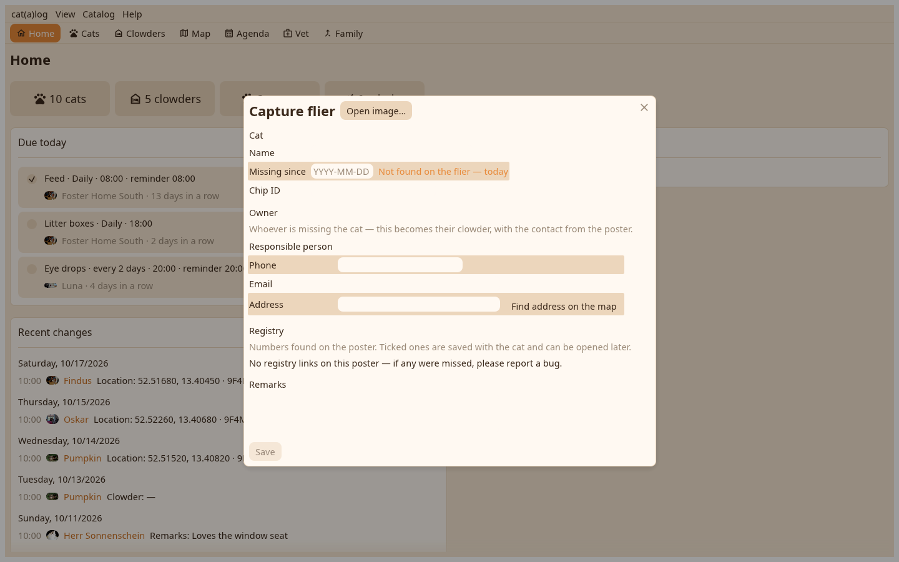

A poster photographed on the phone and saved to disk becomes a missing cat at the desk: Capture flier in the Catalog menu or on the Cats view reads the image.

The lines the recogniser read, each with the field it goes to; a registry's template assigns them where it knows the layout. The cat's name and looks, the owner's contact as a clowder with the status owner, the missing-since day, and Save.
The poster's place is a flier position, a pin on the map. Flier hangs here from a page's Actions menu records another, with the position picked on the map; a right-click on a flier pin takes it down.